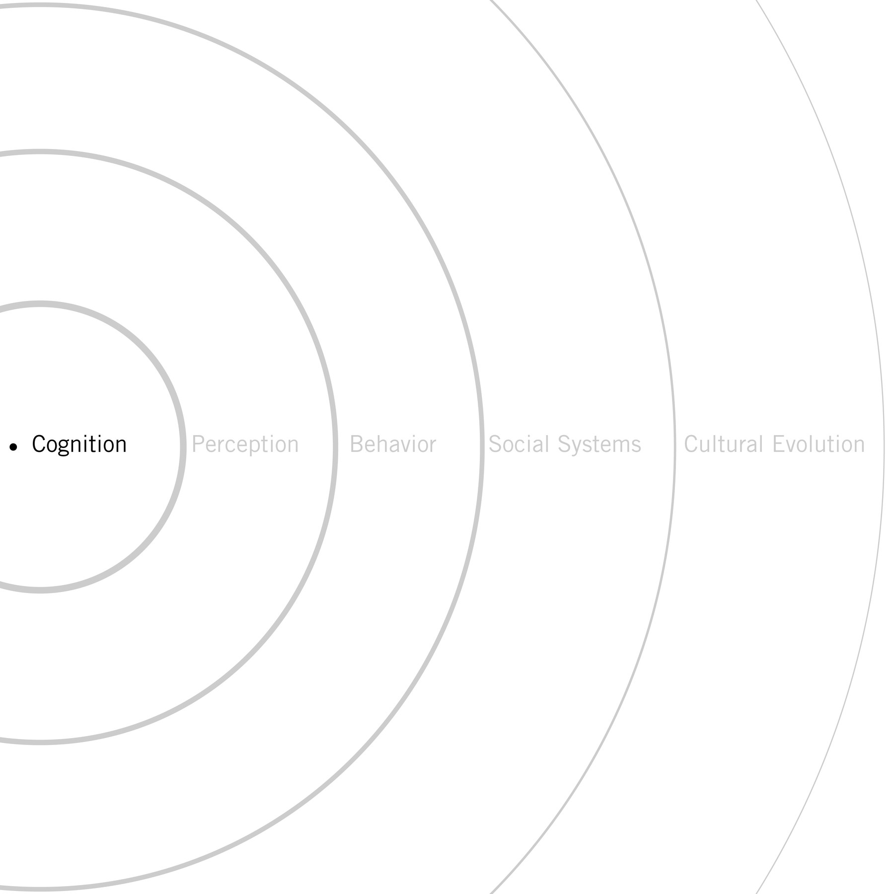
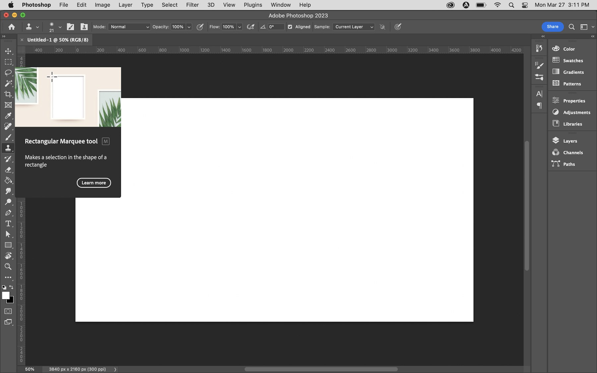
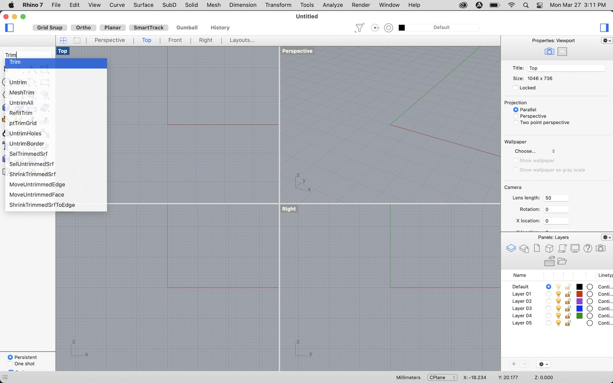

As an Industrial Designer by training, I’m very aware of affordances, mapping and feedback and I’ve written about it in the past. But more recently, I’ve been thinking a lot about the idea of "experience vs. usability".
Following usability criteria to a T often leads to homogeneity as we look to the "best practices" and try to tap into existing learned knowledge of users. It’s one of many reasons websites today all look similar. And for the most part, this approach works. They do the thing we want them to do. But they often lack long-term engagement. The apps we use the most these days are often just platforms, containers for delivery of content. The engagement comes from the content, not from the actual app itself. The goal of the app is simply to deliver a stream of engaging content in an easy-to-use manner. Is the "user" then the content creator, and the goal of the app to make it as easy as possible to upload content? But content creators often have issues with the platforms they rely on, and the method of upload, creating a whole market of creator owned platforms, alternate revenue channels and uploader apps.
Contrast that with software "tools". I’ve spent a lot of time working with Illustrator and Rhinoceros. What both have in common is that they're (relatively) easy to pick up but take a long time to master. There’s always something new to learn, a better workflow or shortcut. In many ways, they’re like musical instruments. And like instruments, they also require an understanding of theory (musical theory vs. gestalt) and a combination of intent and exploration to get a good result. The learning curve has a "long tail", leading to both engagement, and a feeling of accomplishment.

Photoshop’s interface relies heavily on icons and shortcuts. While they’ve added tutorials and contextual prompts, the core of the interface relies on knowledge of what each icon does. This in turn leads to "shortcut guides" like this. This obviously violates many of Norman’s critiques about design, and yet Photoshop is a standard that’s come to dominate the industry.

In contrast, while Rhino’s basic interface has icons and all the commands and options are neatly arranged into groups, once a user has learned the basic commands, almost all actions can be done by typing. There are just too many commands to have all of them shown at once. Instead, typing a few letters brings up the prompt for commands, which can then be entered with a tap of the return key. The commands themselves are straightforward and apply to other CAD software. (No points for guessing what commands like "Circle" and "Trim" do).
What’s interesting is that this is in many ways similar to the command line interfaces of pre-GUI computers. What’s also interesting is that apps like ChatGPT and interfaces like Alexa also follow this method of interaction. Have we reached the top (bottom?) of Norman’s U-shaped curve? Or have we just come full circle and back to the beginning?